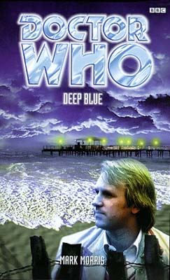

|
Deep Blue
|
BASIC PLOT DOCTOR COMPANIONS Brigadier Lethbridge-Stewart, Sergeant Benton and Captain Mike Yates appear. From their point of view it is about six months after the events of The Green Death, but before The Time Warrior. The Third Doctor is currently off-Earth, and travelling alone. MATERIALISATION CIRCUIT Pg 107 The Xaranti ship, below the sea. By Pg 132 the TARDIS has returned to the Pleasure Beach (its location is confirmed on Pg 211). We don't actually see this happen, though. Pg 234 Xaranti Headquarters, on the ship. Pg 245 On the Beach at Tayborough (the seaside, not the Pleasure Beach) Pg 247 Tayborough Sands Hospital, 12th floor. PREPARATORY READING CONTINUITY REFERENCES "The Doctor had shown him the error of his ways with the aid of a blue crystal he'd picked up on some far-flung planet or other." The Green Death again, but the crystal is, of course, important in Planet of the Spiders. "Despite the vital part he'd played in repelling the many and various threats to Earth over the years, he had started to convince himself that his life was meaningless." This pretty much prefigures Mike's reactions in both Invasion of the Dinosaurs and, subsequently his decision to take up meditation in Planet of the Spiders. Pg 15 "[The Doctor] had been distracted and irritable ever since his assistant, Jo Grant, had quit UNIT." The Green Death again. This book establishes that there were at least six months between The Green Death and The Time Warrior, during which the Doctor spent a lot of time traveling alone out in the Vortex. Pg 18 "...and to whiz [sic] about the countryside in Bessie, his little yellow car." Seen throughout much of the Pertwee era and again in The Five Doctors and Battlefield. Pg 20 "(if he had a grandmother, that was; he had always been as evasive about his origins as he was about virtually everything else.)" Turlough's origins, and the reasons for his evasiveness, are revealed in Planet of Fire. "When he had first wriggled like a maggot into the core of the TARDIS crew, he had been working for an entity called the Black Guardian who wanted the Doctor destroyed," Mawdryn Undead, Terminus, Enlightenment. "'How many years out are we?' she asked, addressing the Doctor and making an effort not to sound exasperated. He glanced up at her, narrowing his eyes as if to assess her mood. 'Oh, only a few. Ten or so. Twelve at the most.'" The Doctor's lack of specifics on date may be a sly dig at the utter collapse of any form of coherent UNIT dating following Mawdryn Undead. Pg 21 "He'd said they all needed cheering up after the terrible events they'd witnessed on Sea Base Four." Warriors of the Deep. Pg 35 "It couldn't still be the events on Sea Base Four which were disturbing him, could it?" Warriors of the Deep again. Pgs 35-36 "The thing was, traveling with the Doctor had made her expect trouble wherever she went. If she hadn't been captured or shot at within ten minutes of arriving somewhere she became suspicious. Which, to be honest, was no way to be, was it? Perhaps she ought to think about getting out before she became so battle-hardened..." This, albeit not terribly subtly, presages Tegan's decision to leave in Resurrection of the Daleks. Pg 37 "The cries of gulls, though raucous, were familiar and comforting, transporting her back to a happy weekend she had spent in Brighton with Aunt Vanessa not long after arriving in England, and to days sailing off the south coast with her grandfather." Aunt Vanessa, brutally shrunk to death by the Master in Logopolis, and whom Tegan has recently seen a picture of in Enlightenment, and her Grandfather whom Tegan attempts to visit in The Awakening. Pg 38 "She had promised to visit [her grandfather] just as soon as she returned from Amsterdam." She was there in Arc of Infinity. "All she had to do was ask the Doctor to take her to visit her grandfather before he had cause to wonder where she was." Tegan decides to visit her Grandfather (and, as it turns out, the Malus) at this point, prefiguring The Awakening. Pg 39 "Polite applause from the cricket match on the TV greeted her as she entered. The carpet bag that the Doctor had lent Turlough was open on the bed." Cricket was something of a recurring theme for the Fifth Doctor. I've a feeling the carpet bag may have been seen before as well, but I may well be making that up. "'Dr John Smith?' said the woman." A regular pseudonym for the Doctor, first used in The Wheel in Space. Pg 41 "The Doctor rammed his hand into his coat pocket and produced a dozen or so glittering purple shells which he scattered across the small counter in front of the man." This is very similar to the way the Doctor would later pay in Planet of Fire. Pg 42 "'Oh, I'm not a journalist. I work for UNIT. In an advisory capacity, of course. I have a pass here somewhere.' The Doctor rummaged frantically through his pockets, then all at once his face cleared and he grinned. He removed his panama hat to reveal a square of laminated card perched on the top of his head." This is a direct rip-off of a sequence in Battlefield. It wasn't funny then and it isn't funny now. Pg 48 At about this point we note that Tegan only appears to be able to think in continuity. "Since Amsterdam, her life had been a whirlwind of exotic locations and life-shattering - sometimes planet-shattering - events." Arc of Infinity was Amsterdam. For 'life-shattering' we might include Nyssa's departure in Terminus or Tegan's possession by the Mara. For 'planet-shattering' we should certainly mention Fear of the Dark and Zeta Major at the very least. Pg 52 "'How do you know I'm not a local?' 'If you are, that's a very convincing Australian accent you've got there.' This is possibly a reference to Janet Fielding being forced to really overdo the Australian accent when playing the part. Pg 57 "'I don't know. Maybe you want to get to the real Doctor through me. You could be the Master for all I know.'" The Master. Do I have to tell you? UNIT saw a lot of him. "'You don't seem as...' 'Arrogant. Overbearing?' Mike shrugged embarrassedly. 'You said it' 'Yes, well,' said the Doctor, non-plussed, 'when one matures, one irons out these little foibles.'" The Fifth Doctor condemns the Third's behaviour. He should see what's going to happen next time. Pgs 57-58 "'What date is it?' he asked. Puzzled, Mike told him." The date is kept deliberately obscure. See 'UNIT Dating: The Nightmare Continues' Pgs 712-826. Pg 59 "'Since you last saw me I've regenerated twice.'" Either in Planet of the Spiders or Interference Part II, and in Logopolis. "Mike looked at the Doctor deadpan for a moment, and then said, 'Thank you. That makes everything perfectly clear.'" Mike is quoting the Brigadier, I think, but I can't remember in what. Pgs 67-68 "'You know I was tricked by the Black Guardian... We got each other out of Sea Base Four alive, didn't we?'" Mawdryn Undead, Terminus, Enlightenment and then Warriors of the Deep again. Pg 87 "'What are you looking for?' 'Nothing incriminating,' said the Doctor pointedly. 'Ah!' Turlough was still blushing at the oblique reference to his past." Ah, it was oblique was it? Well, now we know. The Black Guardian trilogy again. Pg 89 "'Oh, just that in a few years time, I'm going to turn up as a pupil at the school where he teaches Maths. Which rather raises the question: why didn't he recognize me when I arrive?'" Mawdryn Undead, and utterly fair point, by the way. The Doctor gives us a fob-off answer, but it's not good enough, frankly. It seems to work on the principal that he didn't, so therefore he won't, which is a touch cavalier on the Doctor's part. Pg 90 "Mike Yates drove the Escort, which had been seconded to him from the army car pool, the same way he drove his own red Spitfire - fast but skillfully." We saw Mike's driving and the car in Planet of the Spiders. "[Turlough] hadn't been in a car since he had crashed the Brigadier's beloved Humber Tourer." In Mawdryn Undead. Pg 92 "So if she did stay here, she wouldn't be able to save Aunt Vanessa from being murdered." Since she didn't when it happened in Logopolis, so she couldn't have, could she? Clear? Thought so. Pg 93 "If she was going to enjoy her day with Andy, Tegan knew she would have to stop dropping subtle clues that there was more to her than met the eye. She didn't mean to do it, but she couldn't help it somehow." Marvellously, even Tegan has noticed that she can only think in terms of continuity. Pg 97 "The TARDIS has an in-built ability to seek out the nearest safe landing spot - which is why she never materializes inside solid objects or underwater." REALLY?!!! This beggars belief. Clearly lists of safe spots include the path of an oncoming plane (The Faceless Ones) and the edge of a cliff (The Curse of Peladon) amidst numerous other examples. I'd love to have a word with the designer of that particular circuit. Pg 104 "That Global Chemicals Business." The Green Death. The Prime Minister is male at the time, which fits with the above story. The position is held by a woman by Terror of the Zygons. Pg 107 "'It's an Image Reproduction Integrating System - IRIS machine for short. It translates thoughts into pictures.' 'Does it work?' Turlough asked. 'Oh, yes. But the only time I used it, someone died. I haven't tried it since.'" As seen in Planet of the Spiders. Given the number of Third Doctor gadgets and characters, surely it would have been easier to make this a Third Doctor story. Pg 110 "'Morok battle cruiser,' the Doctor replied." The Moroks were one of the opposing sides in The Space Museum. Pgs 110-111 "In my experience, people are usually friendly enough if you show them you mean them no harm." This is very similar to something the Doctor says to Leela in The Robots of Death. Pg 120 "The Doctor turned back briefly, raised his hat and said, 'Sorry, must dash.'" Much as he did in The Five Doctors. Pg 123 "Originally from an unnamed planet in the Tau Ceti system, but that was destroyed several centuries ago in their war with the Zygons." Other things from the Tau Ceti system include the Ogri from Stones of Blood and the telekinetic drug in Revolution Man. The Zygons appeared in Terror of the Zygons and The Bodysnatchers. Pg 132 "'Turlough, would you be so kind as to order some tea?' the Doctor asked." Throughout Goth Opera, Tegan was essentially demoted to tea-maker. There is an irony that it's now Turlough's turn. Pg 133 Tegan again: "First the Mara, now this. I'm sick of being taken over by aliens." Kinda and Snakedance. Pg 149 "Greyhound One to Greyhound Three. Are you there, Greyhound Three? Over." The Greyhound UNIT callsigns are consistent within the Third Doctor's tenure. Mike was referred to as Greyhound Three in The Time Monster, and the Brigadier as Greyhound One in Invasion of the Dinosaurs. Pg 156 "There was a blur of movement from the front seat of the car and suddenly, impossibly, the Doctor was in the driver's position." Identical to a moment in Remembrance of the Daleks. Pg 159 "Tegan noticed that the Brigadier who had been slumped in his seat for the last couple of minutes was making a concerted effort to pull himself together. She had liked him the first time she had met him." In Mawdryn Undead. Pg 165 The Doctor encourages the Brigadier: "'Nine times seven,' the Doctor responded. 'What...?' 'Quickly, Brigadier. Work it out. Nine times seven.' 'Um... er... sixty-three.'" This may well suggest the Brigadier's interest in Maths which will make him become a teacher of that subject in time for Mawdryn Undead. Pg 186 makes clear that Turlough doesn't have a TARDIS key, presumably as the Doctor still doesn't fully trust him. Pg 187 mentions Brendon School, where Turlough was a student and the Brigadier a teacher in Mawdryn Undead. Pg 197 "It was largely thanks to ships like this that the Moroks would eventually extend their seven-hundred year empire across the nine galaxies." The Space Museum is set after the collapse of the Morok Empire. Pg 200 "A while ago, there was this... this creature called the Mara. It took over my mind, made me do evil things." We know. Kinda, Snakedance. Pgs 201-202 "All right, so Daleks and Autons and the like wouldn't give a hoot about petitions and marches and protest songs, but surely there must be some other way, some other option to consider?" Mike met Daleks in Day of the Daleks and Autons in Terror of the Autons (he may have been around at the time of Spearhead from Space, but is not explicitly seen). This passage, once again, prefigures Mike's decision to join Operation Golden Age in Invasion of the Dinosaurs. Pg 204 has the Doctor in a wheelchair, reminding us fondly of Castrovalva. Pg 222 "Not that the Brigadier was stupid - on the contrary, he possessed a sharp mind and a quick, dry wit." Generally true, of course, but the Doctor has clearly forgotten the events of The Three Doctors. Pg 223 "Mike was different. He was a good soldier - brave and loyal, dependable and efficient and cool under pressure - but also sensitive and sensible, far-thinking but impressionable too." It's not a bad character resume, but again connects to Mike's betrayal of UNIT in Invasion of the Dinosaurs. Pg 229 "And those races impervious to assimilation - the Daleks, the Cybermen, the Movellans - would be wiped out." Monster name-check. The Movellans were in Destiny of the Daleks, although War of the Daleks suggests that they were a massive con (as in 'ret-con'). Pg 235 "When he reached the door he examined the access panel and traced its meanderings to a bulbous metallic nodule that he guessed might have been Kraal in origin." The Kraals were the alien invaders in The Android Invasion. Pg 237 "Conquest through absorption. It's what the Cybermen do, and the Wirrrn. It's the most heinous crime in the universe." Morris maintains Ian Marter's spelling of 'Wirrrn' (with three 'r's) from his novelisation of The Ark in Space. They also appeared in Placebo Effect, with that spelling. (The Ark in Space script only used two 'r's.) Pg 249 What appears to be a massive issue with the Brigadier meeting Tegan and Turlough ahead (from his viewpoint) of their appearance in Mawdryn Undead is resolved with: "'If his memory's anything like mine,' said Tegan, who had risen to her feet and was now standing at the Doctor's shoulder, 'he's not going to know who we are. We're going to have to introduce ourselves all over again.'" This is consistent with the Doctor's prediction from Pg 89, but doesn't really take account of the fact that Mike, who was uninfected, will have to be very careful how he makes his report to the Brigadier. And he doesn't even know that he has to be careful. "An odd, unreadable expression flitted across his eyes, and just for a moment Mike had the impression that he was about to say something momentous or significant. Then abruptly the Doctor said, 'Goodbye,' and, before Mike could respond, stepped smartly in to the TARDIS, slamming the door behind him." For a moment, it appears, the Doctor considered telling Mike, or giving him some hint, about events that were to come in Invasion of the Dinosaurs, but then decides that he ought not. OLD FRIENDS AND OLD ENEMIES NEW FRIENDS AND NEW ENEMIES Definite survivors include Imogen Maybury and her pregnant daughter Charlotte, and Dr. Max Butler.
CONTINUITY COCK-UPS PLUGGING THE HOLES [Fan-wank theorizing of how to fix continuity cock-ups] FEATURED ALIEN RACES The Xaranti, a species of intergalactic scavengers with a hive-like mind structure and a breeding programme that involves telepathically infecting other races to develop into Xaranti. They look "part bull, part spider, part scorpion" (Pg 144) Later, a further animal is added: "conglomeration of bull, spider, crab and scorpion." (Pg 178) FEATURED LOCATIONS The temporary UNIT headquarters at HMS Bilford, same time zone. A Morok battle cruiser, occupied by the Xaranti at the moment, same time zone. IN SUMMARY - Anthony Wilson |
|
 |